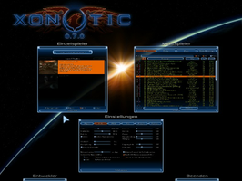
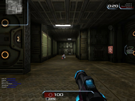

Xonotic
Dieser Artikel wurde für die folgenden Ubuntu-Versionen getestet:
Ubuntu 14.04 Trusty Tahr
Zum Verständnis dieses Artikels sind folgende Seiten hilfreich:
Xonotic  ist eine Abspaltung von Nexuiz. Der Ego-Shooter basiert auf der Darkplaces Engine, einer Weiterentwicklung der Quake-Engine. Spielemechanik und Teamplay orientieren sich an Unreal Tournament und Quake wurden jedoch um einige Eigenentwicklungen ergänzt. Die Spielerstatistiken sowie die zur Verfügung stehenden Server können online eingesehen werden.
ist eine Abspaltung von Nexuiz. Der Ego-Shooter basiert auf der Darkplaces Engine, einer Weiterentwicklung der Quake-Engine. Spielemechanik und Teamplay orientieren sich an Unreal Tournament und Quake wurden jedoch um einige Eigenentwicklungen ergänzt. Die Spielerstatistiken sowie die zur Verfügung stehenden Server können online eingesehen werden.
|  |  |
| Menü | Spielszene |
Installation¶
Direktdownload¶
Die aktuelle Version des Spiels kann von der Projektseite  heruntergeladen werden. Das Archiv muss anschließend entpackt werden [1]. Das Spiel kann über den folgenden Befehl aus dem Installationsverzeichnis heraus gestartet [2] werden:
heruntergeladen werden. Das Archiv muss anschließend entpackt werden [1]. Das Spiel kann über den folgenden Befehl aus dem Installationsverzeichnis heraus gestartet [2] werden:
./xonotic-linux-glx.sh
Auf Wunsch kann man einen Menüeintrag vornehmen [3].
Desura¶
Das Spiel kann über die Internetseite oder den Client zur Spieleliste hinzugefügt und über letzteren gestartet werden [4].
git¶
Der Code von Xonotic steht zur Verfügung und kann kompiliert werden [7].
Zunächst müssen die folgenden Pakete installiert [5] werden:
git-core
xorg-dev
 mit apturl
mit apturl
Paketliste zum Kopieren:
sudo apt-get install git-core xorg-dev
sudo aptitude install git-core xorg-dev
Nun den Quellcode herunterladen [6]:
git clone git://git.xonotic.org/xonotic/xonotic.git
Im nächsten Schritt leitet man den Vorgang [6] ein:
cd xonotic ./all update ./all compile
Mit folgendem Befehl kann das Spiel aus dem Installationsverzeichnis heraus gestartet [2] werden:
./all run
Update¶
Um ein Update des Clients durchzuführen besteht seit Version 0.5 die Möglichkeit die Datei update-to-release.sh im Verzeichnis ~/Spiele/Xonotic/misc/tools/rsync-updater zu starten [2]. Hier wird geprüft, welche Dateien ein Update erfahren haben. Diese werden anschließend heruntergeladen.
Probleme und Lösungen¶
Tastenkürzel¶
| Tastenkürzel | |
| Taste(n) | Funktion |
 | Steuerung |
| ⏎ / | springen / schwimmen |
| ⇧ | ducken / sinken |
| E | Enterhaken / Jetpack |
 / /  | Angriff |
 (Mausrad) (Mausrad) | Waffenwechsel |
| nachladen | |
| 1 - 0 | Direktwahl der Waffe |

Infobox¶
| Xonotic | |
| Genre: | Ego-Shooter |
| Sprache: |       |
| Veröffentlichung: | 2010+ |
| Entwickler: | Xonotic Team |
| Systemvoraussetzungen: | 2000+ MHz Prozessor / 2 GB+ Arbeitsspeicher / 1 GB Festplattenspeicher / Grafikkarte mit OpenGL Unterstützung |
| Medien: | Download |
| Strichcode / EAN / GTIN: | - |
| Läuft mit: | nativ |
- Erstellt mit Inyoka
-
 2004 – 2017 ubuntuusers.de • Einige Rechte vorbehalten
2004 – 2017 ubuntuusers.de • Einige Rechte vorbehalten
Lizenz • Kontakt • Datenschutz • Impressum • Serverstatus -
Serverhousing gespendet von